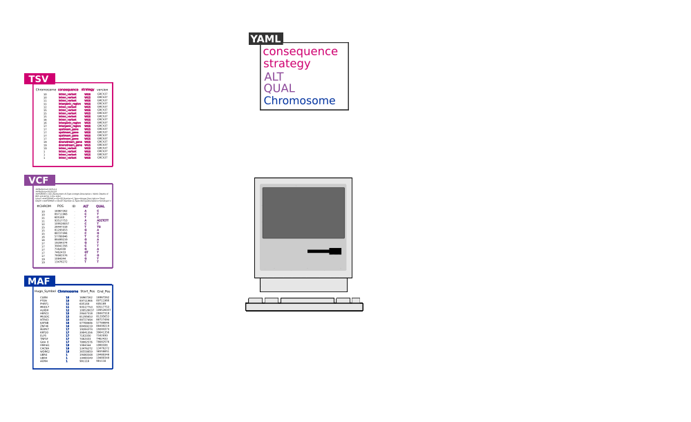

Annotation structure#
When we talk about the structure that OpenVariant needs, we can distinguish 3 different groups of files: input, annotation and output.
Output files are generated by OpenVariant and they will be the result of the whole process. On the other side,
the input and the annotation ones are provided by the user. Input files will be a bunch
of multiple files in different formats (e. g. tsv, csv, vcf, maf, bed) which will be parsed in a
way that previously has been defined. The annotation will describe how the output will be and how input files will be parsed.
This annotation file will be a YAML file which will describe how output will look. On the follow section we can see the different
parameters that can handle annotation file in order to carry out the parsing process.
For further details and understand how to use, check our Examples and the Annotation Example and the Annotation Template on the GitHub repository.
Now we will take a look into the different parameters that are required to configure the annotation file and the optional ones:
Pattern (required)#
List of file patterns which the package will match and apply the corresponding annotation. Can be applied regexp to search and match the files with that pattern.
# Example:
pattern:
- '*.maf'
- 'samples.vcf.gz'
Format (optional)#
The format that the output will be, in case we save the output on a file or we would like to show on the standard output.
There are only two options: tsv (tab-separated value) or csv (comma-separated value). It is optional and the
default value is tsv.
# Example:
format: 'tsv'
Columns (optional)#
List of columns that we want as an output. All values must be values described in the Annotation parameter. If it is empty the default value will be all the fields described in the Annotation parameter.
# Example:
columns:
- 'SAMPLE_ID'
- 'NUM_CASES'
- 'PROJECT'
- 'COUNTRY'
Annotation (required)#
A list of the different annotations that output file will have. The list of each field
will be set it up with the annotation key, then, each annotation will be described
on the list.
annotation:
- ...
...
- ...
...
- ...
...
The order of the different annotations doesn’t matter and in each annotation type has its different properties.
Each annotation type will be determined by type parameter and the name of the column that will create is a value
that we describe on field parameter. Each of them are explained in the following sections:
Static#
Fixed value that will be parsed to all the rows of the output file. The value can be a number or a string.
type: type of annotation. (required)field: name that will appear as a head column of this annotation. (required)value: final value that will parsed in all rows. (required)
# Example:
- type: 'static'
field: 'ID'
value: 'SG2F24986083'
Internal#
Transformation of input values to the output. It will match the fieldSource that appears in the input file and
it will rewrite with the new field name in the output. Also, all the value will be executed through function parameter
which is a lambda function that will take the value as an input.
type: type of annotation. (required)field: name that will appear as a head column of this annotation. (required)fieldSource: list of that will try to match with input fields and transform it to the annotationfieldon the output. (required)function: lambda function that will be executed after get the value offieldSource. If it is not specified it will execute(lambda y: y)making any modification into the value. (optional)
# Example:
- type: 'internal'
field: 'CHROMOSOME'
fieldSource:
- 'Chromosome'
- 'Chr'
- 'Chrom'
- 'Chromosome_Name'
- '#chrom'
function: "lambda c: c.upper().replace('CHR', '').replace('23', 'X').replace('24', 'Y')"
Filename#
It will get the name of the input file that is processing at that moment
as the value of the field. Also, the filename will be executed through function parameter and regex parameter as an input.
type: type of annotation. (required)field: name that will appear as a head column of this annotation. (required)function: lambda function that will be executed after get the value offieldSource. If it is not specified, it will execute(lambda y: y)making any modification into the value. (optional)regex: regular expression that will be executed afterfunctionparameter runs. If it is not specified, it will execute(.*)as a regular expression. (optional)
# Example:
- type: 'filename'
field: 'DATASET'
function: 'lambda x: "{}".format(x.lower()[:-4])'
regex: '[a-zA-Z0-9]*.'
Dirname#
Based on the dirname where is located the input file. It will get the name of the directory which is located the input file
that is processing on that moment as field value. Also, the dirname will be executed through function parameter and regex parameter as an input.
It will result with the same workflow that Filename type.
type: type of annotation. (required)field: name that will appear as a head column of this annotation. (required)function: lambda function that will be executed after get the value offieldSource. If it is not specified, it will execute(lambda y: y)making any modification into the value. (optional)regex: regular expression that will be executed afterfunctionparameter runs. If it is not specified, it will execute(.*)as a regular expression. (optional)
# Example:
- type: 'dirname'
field: 'PROJECT'
function: 'lambda x: "{}".format(x.lower())'
regex: '[a-zA-Z0-9]*-[0-9]*'
Mapping#
Allows to use a mapping file to apply a new value based on a many-to-one relation between input file and the mapping file. This annotation has different parameter that we can describe as:
type: type of annotation. (required)field: name that will appear as a head column of this annotation. (required)fieldSource: list of field that it will match from the input file. (required)fieldMapping: field that it will match on the mapping file with thefieldSourceparameter. (required)fileMapping: the mapping file that it will use to parse this value. (required)fieldValue: field that it will match on the mapping file and it will return as a value of this annotation. (required)
It will take fieldSource on the input file and it will match with the value of fieldMapping on the mapping file.
When these two values match it will get the value of fieldValue on that row as the value of the output field.
# Example:
- type: 'mapping'
field: 'MUTATION_REF'
fieldSource:
- 'MutationID'
- 'id'
- 'Mutation_Id'
fieldMapping: 'MUTATION_ID'
fileMapping: 'metadata_mutation.tsv'
fieldValue: 'REFERENCE'
Plugin#
It will apply the plugin functionality to each row of the input file. The plugin can be internal, located into plugin folder or can be customized and created by the user. See further details in Plugin system section.
The parameters that Plugin needs are:
type: type of annotation. (required)field: name that will appear as a head column of this annotation. (required)plugin: name of plugin to apply (required)
# Example:
- type: 'plugin'
field: 'ALT_TYPE'
plugin: 'alteration_type'
Exclude (optional)#
List of values that will be excluded from the output file in the parsing process. This parameter is optional and all the elements will be treated as an OR operation, it means if any of the elements turns true the row will be removed.
exclude:
- ...
...
- ...
...
- ...
...
Each element is composed of a field parameter and a value parameter. If the value matches with the same field
that appears in the output, the row that is reading on that moment will be excluded. Both parameters are required.
Here, a short example:
# Example:
exclude:
- field: 'DATASET'
value: 'laml'
- field: 'DATASET'
value: 'ucs'
In addition, we can distinct ! operator which it will exclude all the rows that are not the same as the value
in the same field. Short example of it:
# Example:
exclude:
- field: 'ID'
value: '!GB00BLF7NX68'